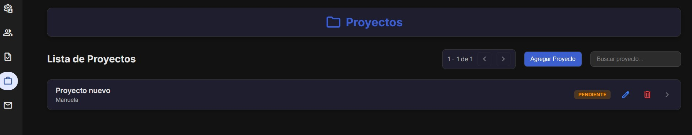
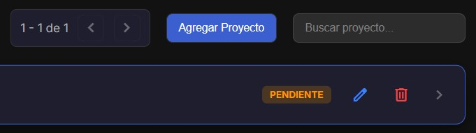
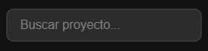
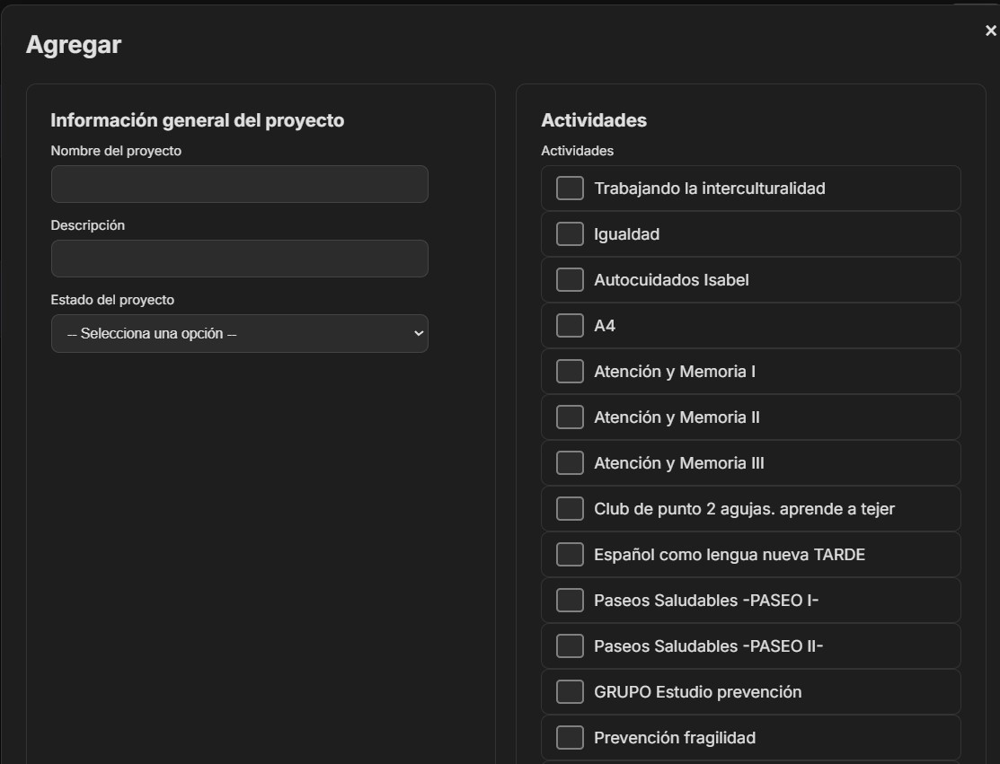
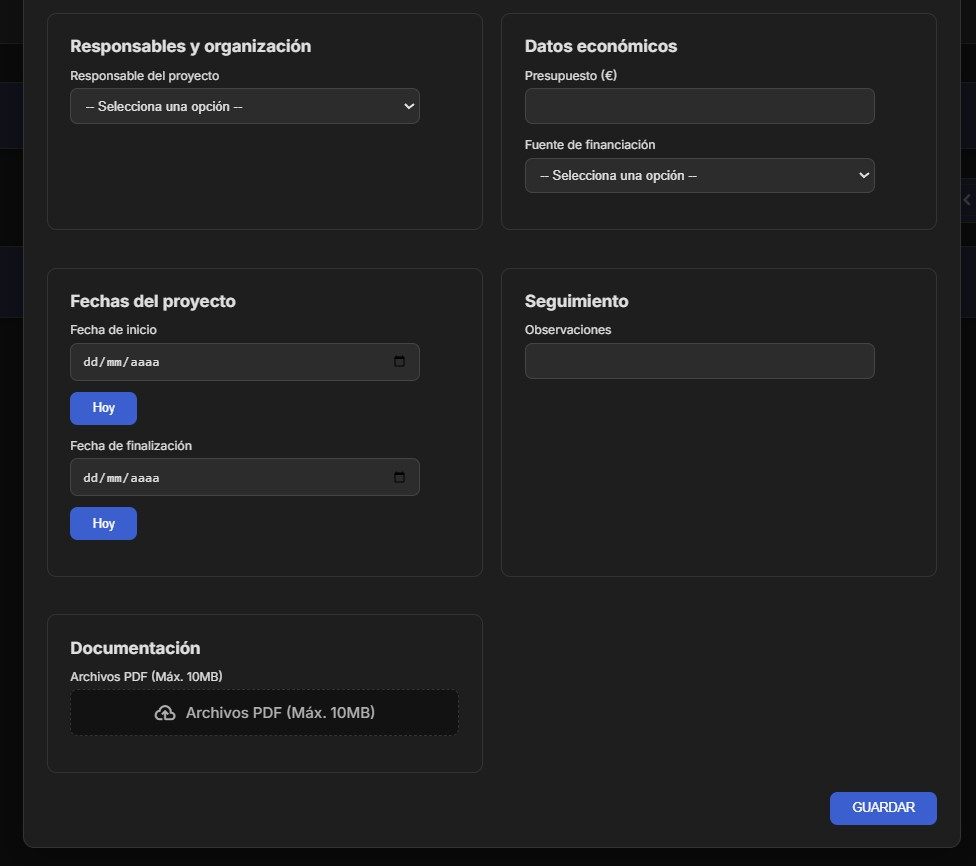

Gestión de Proyectos
Planifica y realiza el seguimiento de los objetivos a, corto, medio y largo plazo de la asociación.

CRUD de Proyectos: Permite agregar nuevos proyectos, editar sus objetivos o eliminarlos
del sistema.

Podemos agregar proyectos desde el boton de agregar proyectos y podemos editar o eliminar los mismos con los botones de editar y eliminar
Buscador: Filtra y encuentra proyectos específicos rápidamente para consultar su
estado.

Podemos buscar proyectos desde el buscador de proyectos
Organización: Asocia tareas y recursos a cada proyecto para un control eficiente.

Este es el formulario de los proyectos, tiene la particularidad de que podemos relacionar actividades existentes con proyectos.

Tambien se puede añadir documentación de los proyectos en formato pdf.